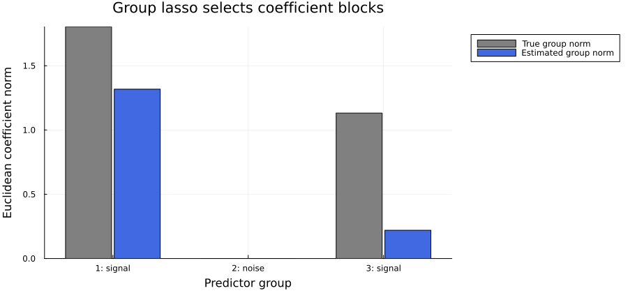

Group lasso
Some predictors belong together: several basis functions can describe one curve, or several indicators can describe one categorical factor. Selecting individual coefficients may break that structure. Group lasso penalizes each coefficient block by its Euclidean norm, encouraging entire groups to become zero together. The figure compares the sizes of the true and fitted groups in a small simulation.

Group lasso by block coordinate descent on a BlockIterate, and by proximal gradient descent (plain or accelerated) on a dense vector. GroupNormL2(λ, groups) is the penalty λ Σₖ wₖ ‖β[Gₖ]‖₂ with the default weights wₖ = √|Gₖ|; the groups may be any disjoint index sets, here not contiguous. For CDSolver the iterate is a BlockIterate with the same groups, in the same order, and CDSolver updates one whole group at a time. CDSolver on a BlockIterate, and ProximalGradientDescent and AccProxGradDescent on a dense Vector, accept a GroupNormL2 penalty; see Supported problems for the accepted inputs.
The statistical objective
For a zero-intercept regression $y=X\beta+\varepsilon$, minimize
\[\frac{1}{2n}\|y-X\beta\|_2^2+\lambda\sum_k w_k\|\beta_{G_k}\|_2.\]
The disjoint groups partition the predictors. The default weights $w_k=\sqrt{|G_k|}$ account for different group sizes. We simulate 60 independent observations, eight independent standard-normal predictors, and noise with standard deviation 0.1. Groups 1 and 3 carry signal; group 2 is irrelevant.
Simulating and fitting the grouped model
using LinearAlgebra, Random
using ProximalBase, ProximalSolvers
rng = Xoshiro(2024)
n, p = 60, 8
groups = [[1, 4], [2, 3, 5], [6, 7, 8]]
X = randn(rng, n, p)
beta_true = zeros(p)
beta_true[[1, 4]] .= [1.5, -1.0] # group 1
beta_true[[6, 7, 8]] .= [0.8, 0.0, -0.8] # group 3; group 2 is zero
y = X * beta_true + 0.1 * randn(rng, n)
s = 1 / n
f = s * LeastSquaresLoss(y, X)ProximalBase.Scaled{ProximalBase.LeastSquaresLoss{Float64, Vector{Float64}, Matrix{Float64}, 1, Vector{Float64}}, Float64}(ProximalBase.LeastSquaresLoss{Float64, Vector{Float64}, Matrix{Float64}, 1, Vector{Float64}}([-1.2457314084216575, 0.33379578886085576, -0.6551033873543519, 3.656877258727942, -0.8866196634109392, -1.810816765488251, -0.28200013444617567, 0.887081975081571, -0.2744005585711553, 3.196517570513593 … 1.9630003973370556, 1.5951692366536732, 1.3468164277883554, -1.4614867165829346, -1.1123432723538325, 3.5914528711714957, -1.981310843668364, 0.7745646269130255, -0.5308472989543538, -0.6806640746153283], [-0.28383307962848026 0.9375392721450856 … 0.3703171927272846 -0.6598390335849802; 0.6560084999614029 -0.7852693067639157 … 1.29927546695317 -0.5407322156879296; … ; -0.6827596814474726 -0.9014281091720939 … 1.8464460005810632 0.1784545504023333; -0.010331268640298022 0.8425931542809267 … -0.6063854245841922 -0.47596933430976285], [0.0, 0.0, 0.0, 0.0, 0.0, 0.0, 0.0, 0.0, 0.0, 0.0 … 0.0, 0.0, 0.0, 0.0, 0.0, 0.0, 0.0, 0.0, 0.0, 0.0], Matrix{Float64}(undef, 0, 0), Float64[], Float64[], Float64[], ProximalBase.Scratch(nothing), false), 0.016666666666666666)The point β = 0 is optimal exactly when λ is at least the largest group score s ‖X[:, Gₖ]ᵀ y‖₂ / wₖ; the penalty level here is a quarter of it.
w = sqrt.(Float64.(length.(groups)))
scores = [s * norm(X[:, G]' * y) / w[k] for (k, G) in enumerate(groups)]
lambda = 0.25 * maximum(scores)
g = GroupNormL2(lambda, groups);The solver needs an iterate with the groups of the penalty; BlockIterate(Float64, p, g) takes them from g. With cyclic order, a full pass visits the groups in the order of their numbers, and an active pass visits the active groups in the order of their active slots, which the removal of zero groups after a pass can change.
x = BlockIterate(Float64, p, g)
res = solve!(x, f, g, CDSolver(order = :cyclic, tol = 1e-10))
@assert res.converged && res.minimizer === x
println("passes = ", res.passes, "; converged = ", res.converged)passes = 20; converged = truex is a vector of length p; the coordinates of the solver are its groups. After a solve of at least one pass, as here, the active coordinates are the numbers of the groups with a nonzero block, in no fixed order (with maxpasses = 0 the entry state is kept, including active groups with a zero block). blockindices(x, k) lists the entries of group k in the order the iterate stores them.
beta = Vector(x)
active = sort(collect(activecoordinates(x)))
@assert active == [k for k in eachindex(groups) if any(!iszero, beta[groups[k]])]
@assert 0 < length(active) < length(groups)
for k in eachindex(groups)
println("group ", k, ": entries ", collect(blockindices(x, k)), ", block ", beta[groups[k]],
isactive(x, k) ? "" : " (zero)")
end
println("active groups = ", active)group 1: entries [1, 4], block [1.054219979315037, -0.7902465795849478]
group 2: entries [2, 3, 5], block [0.0, 0.0, 0.0] (zero)
group 3: entries [6, 7, 8], block [0.16729975215256093, 0.018108745980119176, -0.14168519054644216]
active groups = [1, 3]Reading the group-norm figure
A zero fitted norm removes a whole group. A positive norm keeps the group, but does not imply that every coefficient in it is scientifically important: the third simulated group even contains one coefficient whose true value is zero. The shorter estimated bars show the shrinkage induced by regularization.
using Plots
primary_figure = bar(hcat((1:length(groups)) .- 0.18, (1:length(groups)) .+ 0.18),
hcat([norm(beta_true[G]) for G in groups],
[norm(beta[G]) for G in groups]); bar_width=0.34, label=["True group norm" "Estimated group norm"],
color=[:gray :royalblue], xlabel="Predictor group", ylabel="Euclidean coefficient norm",
xticks=(1:3, ["1: signal" "2: noise" "3: signal"][:]),
title="Group lasso selects coefficient blocks", legend=:outertopright, size=(900, 430))
savefig(primary_figure, "group_lasso.svg")
nothingIndependent objective and group KKT checks
converged reports that the change in a full pass was small, not that the point is optimal, so the solution is checked independently from the data. With ∇ = s Xᵀ(Xβ − y), a nonzero group satisfies ∇[G] + λ w β[G] / ‖β[G]‖ = 0, and a zero group satisfies ‖∇[G]‖ ≤ λ w.
function violation(b, k)
grad = s * (X' * (X * b - y))
G = groups[k]
iszero(norm(b[G])) && return norm(grad[G]) - lambda * w[k]
norm(grad[G] + lambda * w[k] * b[G] / norm(b[G]))
end
group_objective(b) = sum(abs2, y - X * b) / (2n) +
lambda * sum(w[k] * norm(b[groups[k]]) for k in eachindex(groups))
@assert isapprox(res.minimum, group_objective(beta); rtol=1e-10)
zero_groups = [k for k in eachindex(groups) if iszero(norm(beta[groups[k]]))]
nonzero_groups = setdiff(eachindex(groups), zero_groups)
@assert maximum(k -> violation(beta, k), nonzero_groups) <= 1e-7
@assert maximum(k -> violation(beta, k), zero_groups) <= 1e-7
println("largest violation: nonzero groups ", maximum(k -> violation(beta, k), nonzero_groups),
", zero groups ", maximum(k -> violation(beta, k), zero_groups))largest violation: nonzero groups 1.6510259168170582e-11, zero groups -0.5331412925836192Proximal gradient descent on a dense vector
ProximalGradientDescent solves the same problem with a dense Vector{Float64} as the iterate and the same penalty g. The penalty must have the element type of the data (here Float64) and its groups must partition 1:p. Each step applies the block soft threshold to every group. A stop that a test proposes counts only where the solver's group KKT residual is below max(gradtol, 64 eps) * S, with S the larger of the largest coefficient λ wₖ and the largest group norm of s Xᵀy; gradtol = 1e-10 asks for a small residual. The residual is computed again from the data, as above.
beta_pgd = zeros(p)
res_pgd = solve!(beta_pgd, f, g, ProximalGradientDescent(), ProximalOptions(maxiter = 20_000, gradtol = 1e-10))
@assert res_pgd.converged && res_pgd.minimizer === beta_pgd
@assert isapprox(res_pgd.minimum, group_objective(beta_pgd); rtol=1e-10)
@assert maximum(k -> violation(beta_pgd, k), eachindex(groups)) <= 1e-7
@assert [k for k in eachindex(groups) if iszero(norm(beta_pgd[groups[k]]))] == zero_groups
@assert maximum(abs, beta_pgd - beta) <= 1e-6
println("PGD: iterations = ", res_pgd.iterations, "; largest violation ",
maximum(k -> violation(beta_pgd, k), eachindex(groups)),
"; largest difference from the CD solution ", maximum(abs, beta_pgd - beta))PGD: iterations = 16; largest violation 1.699727285591835e-10; largest difference from the CD solution 7.964084947076344e-11AccProxGradDescent() takes the place of ProximalGradientDescent() in this call, with the same penalty and the same group stopping check, and the same independent check applies. On this problem the default options end the run at an increase of the objective of rounding size, before the gradient test with gradtol = 1e-10 passes (converged is false), so the call sets allow_f_increases = true.
beta_apg = zeros(p)
res_apg = solve!(beta_apg, f, g, AccProxGradDescent(),
ProximalOptions(maxiter = 20_000, gradtol = 1e-10, allow_f_increases = true))
@assert isapprox(res_apg.minimum, group_objective(beta_apg); rtol=1e-10)
@assert res_apg.converged && maximum(k -> violation(beta_apg, k), eachindex(groups)) <= 1e-7
@assert maximum(abs, beta_apg - beta) <= 1e-6
println("APG: iterations = ", res_apg.iterations, "; largest violation ",
maximum(k -> violation(beta_apg, k), eachindex(groups)))APG: iterations = 23; largest violation 7.615671496435075e-11Limitations
Group selection depends on the chosen grouping, predictor scaling, and penalty level. A block penalty does not select variables within a retained block. Overlapping groups are outside this example's supported partition, and a small KKT residual certifies the optimization rather than the scientific relevance of a group.
What we learned
Replacing individual magnitudes by block norms changes the unit of selection from a coefficient to a predefined group. The figure reports that selection at the group level; the independent checks apply the corresponding block conditions.